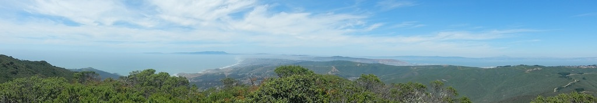
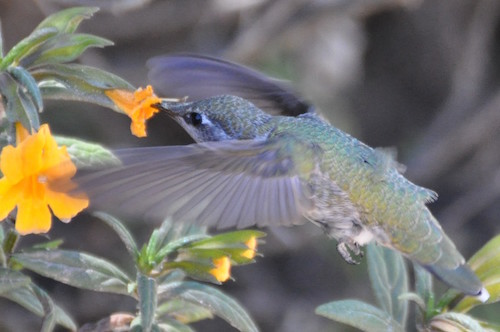
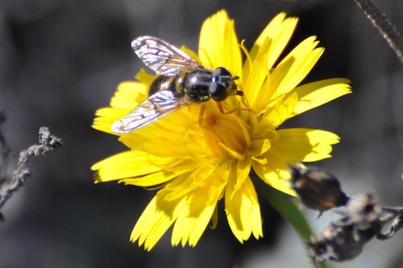

Montara Mountain 🐕

Description
Map
From the Gray Whale Cove trailhead 🐕
Parking: 37.5630556,-122.5124722 (map)
Hiking routes:
Elevation gain: 1827 ft.
🐕 The trail from here is dog friendly. 🐶
From the McNee Ranch State Park side 🐕
Parking: 37.643220,-122.488838 (map)
Hiking route: 7.5 miles, 3-4 hrs
Elevation gain: about 1700 ft.
🐕 The trail from here is dog friendly. 🐶
From the San Pedro Valley Park side:
Park web page: https://parks.smcgov.org/montara-mountain-trail
Park hours: opens at 8 am, closes at posted time (various seasonally).
Parking: 37.578691,-122.475421 (map) in San Petro Valley Park.
The park's street address (600 Oddstad Blvd, Pacifica, CA 94044) will get you close, but you'll have to continue southwest on Oddstad Blvd to see the park entrance.
Parking fee: $6
Hiking route: 8.5 miles, 3-4 hrs
Elevation gain is about 1600 ft
The trail from here is NOT dog friendly 😞

More photos from Montara Mountain on Flickr: https://www.flickr.com/photos/regexman/albums/72157672070021391

